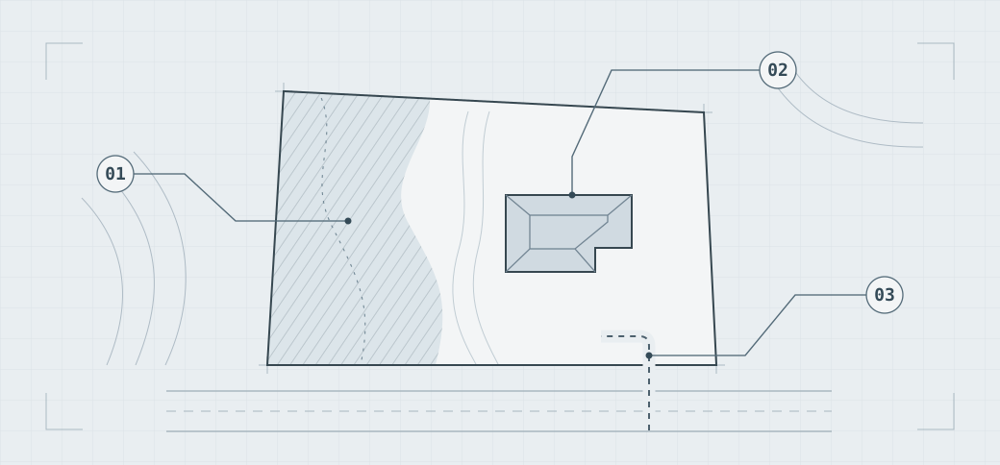

POPES ROAD,
TAKANINI.
What could be done with the existing property, and what needed checking before anyone committed to a design?

- 01 Mapped hazards
- 02 Building footprint
- 03 Vehicle access
Fictional parcel. The drawing does not depict the Popes Road property and is not to scale.
Start with what’s already there.
The assessment identified improvements to the existing property as the clearest option to investigate. Flooding was the main constraint. The review did not establish subdivision potential, an entitlement to another dwelling or a date for urban rezoning.
Clarify the site’s potential before sale.
KOVA prepared a desktop assessment to explain which options were worth investigating and which assumptions the available information didn’t support.
Rules, hazards and practical constraints.
We reviewed zoning, mapped flood hazards, vehicle access, servicing and airport height controls. We separated the planning rules in force at the time from longer term growth signals and proposed changes.
A clear order for the next checks.
The report set out what to confirm before design: survey levels, flood behaviour and safe access, servicing options, and relevant title and consent records.
Desktop assessment completed in November 2026. It did not include a site inspection or engineering assessment and did not establish any approval.
Discuss a similar site